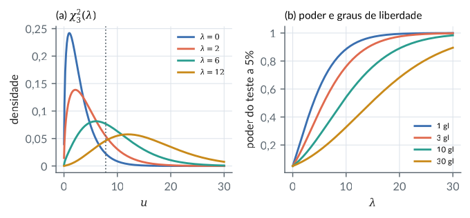
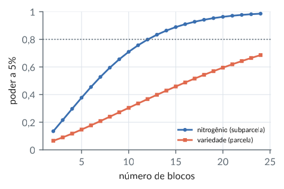
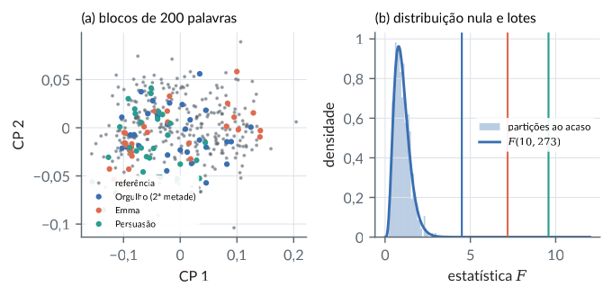
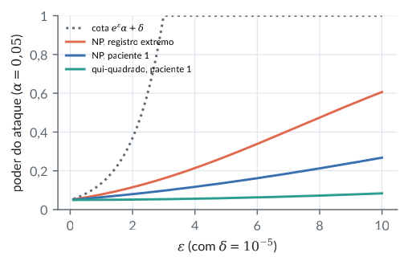

10. Distribuição de formas quadráticas
Material reprodutível do Capítulo 10 do livro.
Exemplos
Qui-quadrado não central, mistura de Poisson e a F
R/cap10/01_distribuicoes.R
# Cap. 10: Qui-quadrado não central, mistura de Poisson e a F
source(file.path("R", "comum", "gerador.R")) # sorteios do Python
g <- gerador(29); N <- 20000; k <- 3
mu <- c(2, 0, 0) # lambda = ||mu||^2 = 4
Z <- matriz_normal(g, N, k)
u <- rowSums(sweep(Z, 2, mu, "+")^2) # ||mu + z||^2
q95 <- qchisq(0.95, k)
mistura <- sum(dpois(0:200, 2) * pchisq(q95, k + 2 * (0:200),
lower.tail = FALSE))
c(media = mean(u), teorica = k + 4, variancia = var(u),
teorica = 2 * k + 4 * 4, P_simulada = mean(u > q95),
P_pchisq = pchisq(q95, k, ncp = 4, lower.tail = FALSE),
P_mistura = mistura)
# Poder do teste qui-quadrado: cresce com lambda
lam <- c(0, 1, 4, 9, 16)
round(rbind(lambda = lam,
poder = pchisq(q95, k, ncp = lam, lower.tail = FALSE)), 4)
# t^2 com nu gl é F(1, nu)
c(t2 = qt(0.975, 10)^2, F = qf(0.95, 1, 10))Saída
media teorica variancia teorica P_simulada P_pchisq P_mistura
7.0181324 7.0000000 22.3577805 22.0000000 0.3572500 0.3585335 0.3585335
[,1] [,2] [,3] [,4] [,5]
lambda 0.00 1.0000 4.0000 9.0000 16.0000
poder 0.05 0.1157 0.3585 0.7113 0.9341
t2 F
4.964603 4.964603python/cap10/01_distribuicoes.py
"""Cap. 10: Qui-quadrado não central, mistura de Poisson e a F."""
import sys
from pathlib import Path
import numpy as np
from scipy.stats import chi2, f, ncx2, poisson, t
sys.path.insert(0, str(Path(__file__).resolve().parents[1]))
from comum.gerador import Gerador # noqa: E402
g = Gerador(29); N, k = 20000, 3
mu = np.array([2.0, 0, 0]) # lambda = ||mu||^2 = 4
u = np.sum((g.matriz_normal(N, k) + mu)**2, 1)
q95 = chi2.ppf(0.95, k); j = np.arange(201)
mistura = np.sum(poisson.pmf(j, 2) * chi2.sf(q95, k + 2 * j))
print(f"média {u.mean():.4f} (teórica {k + 4}), variância"
f" {u.var(ddof=1):.4f} (teórica {2 * k + 16})")
print(f"P(U > q95): simulada {np.mean(u > q95):.4f}, ncx2"
f" {ncx2.sf(q95, k, 4):.4f}, mistura {mistura:.4f}")
# Poder do teste qui-quadrado: cresce com lambda
lam = np.array([0, 1, 4, 9, 16])
poder = [chi2.sf(q95, k) if l == 0 else ncx2.sf(q95, k, l)
for l in lam]
print("poder:", np.round(poder, 4))
# t^2 com nu gl é F(1, nu)
print("t^2 =", t.ppf(0.975, 10)**2, " F =", f.ppf(0.95, 1, 10))Saída
média 7.0181 (teórica 7), variância 22.3578 (teórica 22)
P(U > q95): simulada 0.3573, ncx2 0.3585, mistura 0.3585
poder: [0.05 0.1157 0.3585 0.7113 0.9341]
t^2 = 4.964602743730711 F = 4.964602743730711Figura: qui2 nao central
python/cap10/fig_cap10.py
def fig_qui2():
u = np.linspace(0.01, 30, 400); q = chi2.ppf(0.95, 3)
fig, (a1, a2) = plt.subplots(1, 2, figsize=(LARG, 2.5))
for k, lam in enumerate((0, 2, 6, 12)):
dens = chi2.pdf(u, 3) if lam == 0 else ncx2.pdf(u, 3, lam)
a1.plot(u, dens, color=CATEG[k], label=f"$\\lambda={lam}$")
a1.axvline(q, color=COR["cinza"], ls=":", lw=1)
a1.set_xlabel("$u$"); a1.set_ylabel("densidade"); a1.legend(fontsize=6.3)
a1.set_title("(a) $\\chi^2_3(\\lambda)$", fontsize=8.5, loc="left"); virgula(a1)
lam = np.linspace(0.01, 30, 300)
for k, gl in enumerate((1, 3, 10, 30)):
a2.plot(lam, ncx2.sf(chi2.ppf(0.95, gl), gl, lam), color=CATEG[k], label=f"{gl} gl")
a2.set_xlabel("$\\lambda$"); a2.set_ylabel("poder do teste a 5%"); a2.legend(fontsize=6.3, loc="lower right")
a2.set_title("(b) poder e graus de liberdade", fontsize=8.5, loc="left"); virgula(a2)
fig.tight_layout(); salvar(fig, CAP, "qui2_nao_central")Trecho de python/cap10/fig_cap10.py, que traz também as importações e o estilo.

Cochran na análise de variância com um fator
R/cap10/02_formas.R
# Cap. 10: Cochran na análise de variância com um fator
source(file.path("R", "comum", "gerador.R")) # sorteios do Python
a <- 3; r <- 5; n <- a * r; sigma <- 2
grupo <- rep(1:a, each = r)
D <- outer(grupo, 1:a, "==") * 1
J <- matrix(1 / n, n, n); P <- D %*% solve(crossprod(D)) %*% t(D)
A1 <- P - J; A2 <- diag(n) - P # entre e dentro
c(postos = c(sum(diag(A1)), sum(diag(A2))),
A1A2 = max(abs(A1 %*% A2)))
mu <- rep(c(10, 11, 13), each = r) # médias dos grupos
lambda <- drop(t(mu) %*% A1 %*% mu) / sigma^2
g <- gerador(31); R <- 20000
Y <- sweep(matriz_normal(g, R, n, sigma), 2, mu, "+")
q1 <- rowSums((Y %*% A1) * Y) / sigma^2 # SQ entre / sigma^2
q2 <- rowSums((Y %*% A2) * Y) / sigma^2 # SQ dentro / sigma^2
F <- (q1 / (a - 1)) / (q2 / (n - a))
c(lambda = lambda, media_q1 = mean(q1), teorica = a - 1 + lambda,
media_q2 = mean(q2), teorica = n - a, correlacao = cor(q1, q2),
poder_sim = mean(F > qf(0.95, a - 1, n - a)),
poder_teo = pf(qf(0.95, a - 1, n - a), a - 1, n - a, ncp = lambda,
lower.tail = FALSE))Saída
postos1 postos2 A1A2
2.000000e+00 1.200000e+01 3.469447e-18
lambda media_q1 teorica media_q2 teorica correlacao
5.833333333 7.819833367 7.833333333 11.963874305 12.000000000 0.003007187
poder_sim poder_teo
0.461850000 0.463229545python/cap10/02_formas.py
"""Cap. 10: Cochran na análise de variância com um fator."""
import sys
from pathlib import Path
import numpy as np
from scipy.stats import f, ncf
sys.path.insert(0, str(Path(__file__).resolve().parents[1]))
from comum.gerador import Gerador # noqa: E402
a, r = 3, 5; n = a * r; sigma = 2.0
D = np.kron(np.eye(a), np.ones((r, 1)))
J = np.full((n, n), 1 / n); P = D @ np.linalg.inv(D.T @ D) @ D.T
A1, A2 = P - J, np.eye(n) - P # entre e dentro
print("postos:", np.trace(A1).round(), np.trace(A2).round(),
" max|A1 A2| =", np.abs(A1 @ A2).max())
mu = np.repeat([10.0, 11, 13], r) # médias dos grupos
lam = mu @ A1 @ mu / sigma**2
g = Gerador(31); R = 20000
Y = g.matriz_normal(R, n, sigma) + mu
q1 = np.sum((Y @ A1) * Y, 1) / sigma**2 # SQ entre / sigma^2
q2 = np.sum((Y @ A2) * Y, 1) / sigma**2 # SQ dentro / sigma^2
F = (q1 / (a - 1)) / (q2 / (n - a)); c = f.ppf(0.95, a - 1, n - a)
print(f"lambda = {lam:.4f}; médias {q1.mean():.4f} (teórica"
f" {a - 1 + lam:.4f}) e {q2.mean():.4f} (teórica {n - a})")
print(f"correlação = {np.corrcoef(q1, q2)[0, 1]:.4f}; poder simulado"
f" {np.mean(F > c):.4f},"
f" teórico {ncf.sf(c, a - 1, n - a, lam):.4f}")Saída
postos: 2.0 12.0 max|A1 A2| = 5.921189464667503e-18
lambda = 5.8333; médias 7.8198 (teórica 7.8333) e 11.9639 (teórica 12)
correlação = 0.0030; poder simulado 0.4618, teórico 0.4632Wishart, complemento de Schur e o T^2 de Hotelling
R/cap10/03_wishart_t2.R
# Cap. 10: Wishart, complemento de Schur e o T^2 de Hotelling
source(file.path("R", "comum", "gerador.R")) # sorteios do Python
p <- 3; n <- 12; R <- 20000
mu <- c(1, 2, 0)
Sigma <- matrix(c(4, 2, 1, 2, 3, -1, 1, -1, 2), 3)
L <- t(chol(Sigma)); g <- gerador(37)
T2 <- schur <- numeric(R)
for (r in 1:R) {
X <- sweep(matriz_normal(g, n, p) %*% t(L), 2, mu, "+")
xb <- colMeans(X); A <- crossprod(sweep(X, 2, xb))
S <- A / (n - 1)
T2[r] <- n * drop(t(xb - mu) %*% solve(S, xb - mu))
W <- tcrossprod(forwardsolve(L, t(sweep(X, 2, xb)))) # ~ W(n-1, I)
schur[r] <- 1 / solve(W)[1, 1] # = W11 - W12 W22^-1 W21
}
# 1 / (W^{-1})_11 ~ qui-quadrado com m - p + 1 = 9 gl (aqui m = n - 1)
c(media_schur = mean(schur), teorica = n - 1 - p + 1)
Fst <- (n - p) / (p * (n - 1)) * T2
round(rbind(quantis = quantile(Fst, c(0.5, 0.9, 0.95, 0.99)),
F = qf(c(0.5, 0.9, 0.95, 0.99), p, n - p)), 4)
c(rejeicao_5 = mean(Fst > qf(0.95, p, n - p)),
rejeicao_qui2 = mean(T2 > qchisq(0.95, p)))Saída
media_schur teorica
9.037756 9.000000
50% 90% 95% 99%
quantis 0.8496 2.8145 3.9217 7.0681
F 0.8517 2.8129 3.8625 6.9919
rejeicao_5 rejeicao_qui2
0.0521 0.1655python/cap10/03_wishart_t2.py
"""Cap. 10: Wishart, complemento de Schur e o T^2 de Hotelling."""
import sys
from pathlib import Path
import numpy as np
from scipy.linalg import solve_triangular
from scipy.stats import chi2, f
sys.path.insert(0, str(Path(__file__).resolve().parents[1]))
from comum.gerador import Gerador # noqa: E402
p, n, R = 3, 12, 20000
mu = np.array([1.0, 2, 0])
Sigma = np.array([[4.0, 2, 1], [2, 3, -1], [1, -1, 2]])
L = np.linalg.cholesky(Sigma); g = Gerador(37)
T2 = np.empty(R); schur = np.empty(R)
for r in range(R):
X = g.matriz_normal(n, p) @ L.T + mu
xb = X.mean(0); Xc = X - xb; S = Xc.T @ Xc / (n - 1)
T2[r] = n * (xb - mu) @ np.linalg.solve(S, xb - mu)
M = solve_triangular(L, Xc.T, lower=True)
W = M @ M.T # ~ W(n-1, I)
schur[r] = 1 / np.linalg.inv(W)[0, 0] # W11 - W12 W22^-1 W21
# 1 / (W^{-1})_11 ~ qui-quadrado com m - p + 1 = 9 gl (aqui m = n - 1)
print(f"média do complemento de Schur: {schur.mean():.4f}"
f" (teórica {n - p})")
Fst = (n - p) / (p * (n - 1)) * T2
q = [0.5, 0.9, 0.95, 0.99]
print("quantis:", np.quantile(Fst, q).round(4))
print("F: ", f.ppf(q, p, n - p).round(4))
print(f"rejeição a 5%: F {np.mean(Fst > f.ppf(0.95, p, n - p)):.4f},"
f" qui2 {np.mean(T2 > chi2.ppf(0.95, p)):.4f}")Saída
média do complemento de Schur: 9.0378 (teórica 9)
quantis: [0.8496 2.8145 3.9217 7.0681]
F: [0.8517 2.8129 3.8625 6.9919]
rejeição a 5%: F 0.0521, qui2 0.1655Parcelas subdivididas: dois estratos de erro (aveia)
R/cap10/04_parcelas.R
# Cap. 10: Parcelas subdivididas: dois estratos de erro (aveia)
av <- read.csv(file.path("dados", "yates_oats.csv"))
y <- av$yield; n <- length(y)
proj <- function(f) { D <- outer(f, unique(f), "==") * 1
D %*% solve(crossprod(D)) %*% t(D) }
J <- matrix(1 / n, n, n)
PB <- proj(av$block); PV <- proj(av$gen); PN <- proj(av$nitro)
PW <- proj(paste(av$block, av$gen)) # parcelas principais
PNV <- proj(paste(av$nitro, av$gen))
A <- list(bloco = PB - J, variedade = PV - J,
erro_a = PW - PB - PV + J, # erro da parcela
nitrogenio = PN - J, NxV = PNV - PN - PV + J,
erro_b = diag(n) - PW - PNV + PV) # erro da subparcela
# Ortogonalidade e a estrutura de Sigma = s2 I + sp2 D_W D_W'
DD <- 4 * PW # D_W D_W' = 4 P_W
ort <- max(sapply(1:6, function(i) sapply(1:6, function(j)
if (i == j) 0 else max(abs(A[[i]] %*% A[[j]])))))
estrato <- sapply(A, function(Ai)
sum(diag(Ai %*% DD)) / sum(diag(Ai)))
c(max_AiAj = ort, round(estrato, 10))
gl <- sapply(A, function(Ai) round(sum(diag(Ai))))
SQ <- sapply(A, function(Ai) drop(t(y) %*% Ai %*% y)); QM <- SQ / gl
F <- c(QM[1:2] / QM["erro_a"], NA, QM[4:5] / QM["erro_b"], NA)
gl_den <- c(gl["erro_a"], gl["erro_a"], NA, gl["erro_b"],
gl["erro_b"], NA)
data.frame(gl, SQ = round(SQ, 1), QM = round(QM, 1), F = round(F, 2),
p = signif(pf(F, gl, gl_den, lower.tail = FALSE), 3))
s2 <- unname(QM["erro_b"]); sp2 <- unname((QM["erro_a"] - s2) / 4)
c(sigma2 = s2, sigma2_parcela = sp2)
# Poder para uma diferença de 10 entre o melhor e o pior nível
poder <- function(b) {
tv <- c(-5, 0, 5); tn <- c(-5, -5 / 3, 5 / 3, 5)
lv <- 4 * b * sum(tv^2) / (s2 + 4 * sp2)
ln <- 3 * b * sum(tn^2) / s2
c(blocos = b,
variedade = pf(qf(0.95, 2, 2 * (b - 1)), 2, 2 * (b - 1), ncp = lv,
lower.tail = FALSE),
nitrogenio = pf(qf(0.95, 3, 9 * (b - 1)), 3, 9 * (b - 1),
ncp = ln, lower.tail = FALSE))
}
round(t(sapply(c(3, 6, 9, 12), poder)), 3)Saída
max_AiAj bloco variedade erro_a nitrogenio NxV
3.816392e-17 4.000000e+00 4.000000e+00 4.000000e+00 0.000000e+00 0.000000e+00
erro_b
0.000000e+00
gl SQ QM F p
bloco 5 15875.3 3175.1 5.28 1.24e-02
variedade 2 1786.4 893.2 1.49 2.72e-01
erro_a 10 6013.3 601.3 NA NA
nitrogenio 3 20020.5 6673.5 37.69 2.46e-12
NxV 6 321.8 53.6 0.30 9.32e-01
erro_b 45 7968.7 177.1 NA NA
sigma2 sigma2_parcela
177.0833 106.0618
blocos variedade nitrogenio
[1,] 3 0.090 0.216
[2,] 6 0.177 0.455
[3,] 9 0.272 0.656
[4,] 12 0.367 0.798python/cap10/04_parcelas.py
"""Cap. 10: Parcelas subdivididas: dois estratos de erro (aveia)."""
from pathlib import Path
import numpy as np
import pandas as pd
from scipy.stats import f, ncf
raiz = Path(__file__).resolve().parents[2]
av = pd.read_csv(raiz / "dados" / "yates_oats.csv")
y = av["yield"].to_numpy(float); n = len(y)
def proj(fator):
D = pd.get_dummies(fator).to_numpy(float)
return D @ np.linalg.inv(D.T @ D) @ D.T
J = np.full((n, n), 1 / n)
PB, PV, PN = proj(av["block"]), proj(av["gen"]), proj(av["nitro"])
PW = proj(av["block"] + av["gen"]) # parcelas principais
PNV = proj(av["nitro"].astype(str) + av["gen"])
A = {"bloco": PB - J, "variedade": PV - J,
"erro_a": PW - PB - PV + J, # erro da parcela
"nitrogenio": PN - J, "NxV": PNV - PN - PV + J,
"erro_b": np.eye(n) - PW - PNV + PV} # erro da subparcela
# Ortogonalidade e a estrutura de Sigma = s2 I + sp2 D_W D_W'
DD = 4 * PW # D_W D_W' = 4 P_W
M = list(A.values())
ort = max(np.abs(M[i] @ M[j]).max() for i in range(6)
for j in range(6) if i != j)
print("max|AiAj| =", ort, " estratos:",
[abs(round(float(np.trace(Ai @ DD) / np.trace(Ai)), 10))
for Ai in M])
gl = np.array([round(np.trace(Ai)) for Ai in M])
SQ = np.array([y @ Ai @ y for Ai in M]); QM = SQ / gl
F = np.r_[QM[:2] / QM[2], np.nan, QM[3:5] / QM[5], np.nan]
den = np.array([gl[2], gl[2], 1, gl[5], gl[5], 1])
tab = pd.DataFrame({"gl": gl, "SQ": SQ.round(1), "QM": QM.round(1),
"F": F.round(2),
"p": f.sf(F, gl, den)}, index=list(A))
print(tab.to_string(formatters={"p": lambda v: f"{v:.3g}"}))
s2 = QM[5]; sp2 = (QM[2] - s2) / 4
print(f"sigma2 = {s2:.4f}, sigma2_parcela = {sp2:.4f}")
# Poder para uma diferença de 10 entre o melhor e o pior nível
tv = np.array([-5, 0, 5.0]); tn = np.array([-5, -5 / 3, 5 / 3, 5])
print("blocos variedade nitrogênio")
for b in (3, 6, 9, 12):
lv = 4 * b * np.sum(tv**2) / (s2 + 4 * sp2)
ln = 3 * b * np.sum(tn**2) / s2
pv = ncf.sf(f.ppf(0.95, 2, 2 * (b - 1)), 2, 2 * (b - 1), lv)
pn = ncf.sf(f.ppf(0.95, 3, 9 * (b - 1)), 3, 9 * (b - 1), ln)
print(f"{b:6d} {pv:10.3f} {pn:11.3f}")Saída
max|AiAj| = 4.6387790727972397e-17 estratos: [4.0, 4.0, 4.0, 0.0, 0.0, 0.0]
gl SQ QM F p
bloco 5 15875.3 3175.1 5.28 0.0124
variedade 2 1786.4 893.2 1.49 0.272
erro_a 10 6013.3 601.3 NaN NaN
nitrogenio 3 20020.5 6673.5 37.69 2.46e-12
NxV 6 321.8 53.6 0.30 0.932
erro_b 45 7968.7 177.1 NaN NaN
sigma2 = 177.0833, sigma2_parcela = 106.0618
blocos variedade nitrogênio
3 0.090 0.216
6 0.177 0.455
9 0.272 0.656
12 0.367 0.798Figura: parcelas poder
python/cap10/fig_cap10.py
def fig_parcelas():
s2, sp2 = 177.0833, 106.0618 # da saída 04_parcelas
tv = np.array([-5, 0, 5.0]); tn = np.array([-5, -5 / 3, 5 / 3, 5])
b = np.arange(2, 25)
pv = [ncf.sf(f.ppf(0.95, 2, 2 * (k - 1)), 2, 2 * (k - 1), 4 * k * np.sum(tv ** 2) / (s2 + 4 * sp2)) for k in b]
pn = [ncf.sf(f.ppf(0.95, 3, 9 * (k - 1)), 3, 9 * (k - 1), 3 * k * np.sum(tn ** 2) / s2) for k in b]
fig, ax = plt.subplots(figsize=(0.7 * LARG, 2.5))
ax.plot(b, pn, "o-", ms=2.5, color=CATEG[0], label="nitrogênio (subparcela)")
ax.plot(b, pv, "s-", ms=2.5, color=CATEG[1], label="variedade (parcela)")
ax.axhline(0.8, color=COR["cinza"], ls=":", lw=1)
ax.set_xlabel("número de blocos"); ax.set_ylabel("poder a 5%"); ax.set_ylim(0, 1)
ax.legend(fontsize=6.3, loc="lower right"); virgula(ax)
fig.tight_layout(); salvar(fig, CAP, "parcelas_poder")Trecho de python/cap10/fig_cap10.py, que traz também as importações e o estilo.

Teste de Chow: a mesma equação de salários para os sexos?
R/cap10/05_chow.R
# Cap. 10: Teste de Chow: a mesma equação de salários para os sexos?
w <- read.csv(file.path("dados", "wage1.csv"))
y <- log(w$wage); n <- length(y); m <- w$female == 1
X <- cbind(1, w$educ, w$exper, w$tenure); k <- ncol(X)
P <- function(Z) Z %*% solve(crossprod(Z), t(Z))
Xu <- cbind(X * !m, X * m) # coeficientes separados
Xd <- cbind(X, m) # só o intercepto muda
SQR <- function(Z) drop(t(y) %*% (diag(n) - P(Z)) %*% y)
r <- SQR(X); u <- SQR(Xu); d <- SQR(Xd)
gl_u <- n - 2 * k
F_chow <- ((r - u) / k) / (u / gl_u) # tudo igual?
F_incl <- ((d - u) / (k - 1)) / (u / gl_u) # inclinações iguais?
signif(c(SQR_restrito = r, SQR_dummy = d, SQR_separado = u,
F_chow = F_chow,
p_chow = pf(F_chow, k, gl_u, lower.tail = FALSE),
F_incl = F_incl,
p_incl = pf(F_incl, k - 1, gl_u, lower.tail = FALSE)), 6)
# A hipótese de variâncias iguais, que o teste supõe
s2 <- sapply(c(FALSE, TRUE), function(g)
sum(resid(lm(y[m == g] ~ X[m == g, -1]))^2) / (sum(m == g) - k))
Fv <- s2[1] / s2[2]
g1 <- sum(!m) - k; g2 <- sum(m) - k
p_v <- 2 * min(pf(Fv, g1, g2), pf(Fv, g1, g2, lower.tail = FALSE))
round(c(s2_homens = s2[1], s2_mulheres = s2[2],
razao = Fv, p = p_v), 4)Saída
SQR_restrito SQR_dummy SQR_separado F_chow p_chow F_incl
1.01456e+02 9.01444e+01 8.85825e+01 1.88193e+01 1.85083e-14 3.04460e+00
p_incl
2.84659e-02
s2_homens s2_mulheres razao p
0.1835 0.1574 1.1659 0.2191python/cap10/05_chow.py
"""Cap. 10: Teste de Chow: a mesma equação de salários?"""
from pathlib import Path
import numpy as np
import pandas as pd
from scipy.stats import f
raiz = Path(__file__).resolve().parents[2]
w = pd.read_csv(raiz / "dados" / "wage1.csv")
y = np.log(w["wage"].to_numpy()); n = len(y)
m = (w["female"] == 1).to_numpy()
X = np.column_stack([np.ones(n), w[["educ", "exper", "tenure"]]])
k = X.shape[1]
Xu = np.column_stack([X * ~m[:, None], X * m[:, None]]) # separados
Xd = np.column_stack([X, m]) # só o intercepto muda
def sqr(Z, v=y):
b = np.linalg.lstsq(Z, v, rcond=None)[0]
return np.sum((v - Z @ b)**2)
r, u, d = sqr(X), sqr(Xu), sqr(Xd); gl_u = n - 2 * k
F_chow = ((r - u) / k) / (u / gl_u) # tudo igual?
F_incl = ((d - u) / (k - 1)) / (u / gl_u) # inclinações iguais?
print(f"SQR: restrito {r:.5f}, dummy {d:.5f}, separado {u:.5f}")
print(f"Chow: F = {F_chow:.5f}, p = {f.sf(F_chow, k, gl_u):.2e};"
f" inclinações: F = {F_incl:.5f},"
f" p = {f.sf(F_incl, k - 1, gl_u):.5f}")
# A hipótese de variâncias iguais, que o teste supõe
s2 = [sqr(X[m == g], y[m == g]) / (np.sum(m == g) - k)
for g in (False, True)]
Fv = s2[0] / s2[1]; g1, g2 = np.sum(~m) - k, np.sum(m) - k
pv = 2 * min(f.cdf(Fv, g1, g2), f.sf(Fv, g1, g2))
print(f"s2 homens {s2[0]:.4f}, mulheres {s2[1]:.4f},"
f" razão {Fv:.4f}, p = {pv:.4f}")Saída
SQR: restrito 101.45557, dummy 90.14445, separado 88.58249
Chow: F = 18.81934, p = 1.85e-14; inclinações: F = 3.04460, p = 0.02847
s2 homens 0.1835, mulheres 0.1574, razão 1.1659, p = 0.2191Deriva de embeddings detectada pelo T^2 de Hotelling
R/cap10/06_deriva.R
# Cap. 10: Deriva de embeddings detectada pelo T^2 de Hotelling
source(file.path("R", "comum", "gerador.R")) # sorteios do Python
source(file.path("R", "comum", "austen.R"))
emb <- embeddings_austen(); E <- emb$E
d <- read.csv(file.path("dados", "austen.csv"))
blocos <- function(livro, L = 200) { # médias de 200 palavras
txt <- tolower(d$texto[d$livro == livro])
ids <- match(unlist(regmatches(txt, gregexpr("[a-z]+", txt))),
emb$vocab)
ids <- ids[!is.na(ids)]; m <- length(ids) %/% L
rowsum(E[ids[1:(m * L)], ], rep(1:m, each = L)) / L
}
pp <- blocos("Pride & Prejudice"); h <- nrow(pp) %/% 2
ref <- pp[1:h, ]
mu <- colMeans(ref); p <- 10
V <- svd(sweep(ref, 2, mu))$v[, 1:p] # PCA da referência
t2 <- function(X1, X2) {
Z1 <- sweep(X1, 2, mu) %*% V; Z2 <- sweep(X2, 2, mu) %*% V
n1 <- nrow(Z1); n2 <- nrow(Z2); g <- n1 + n2 - 2
dm <- colMeans(Z1) - colMeans(Z2)
Sp <- ((n1 - 1) * cov(Z1) + (n2 - 1) * cov(Z2)) / g
T2 <- n1 * n2 / (n1 + n2) * drop(t(dm) %*% solve(Sp, dm))
Fst <- T2 * (g - p + 1) / (p * g)
c(T2 = T2, F = Fst, p = pf(Fst, p, g - p + 1, lower.tail = FALSE))
}
lote <- list(PP_2a_metade = pp[(h + 1):(h + 30), ],
Emma = blocos("Emma")[1:30, ],
Persuasion = blocos("Persuasion")[1:30, ],
Sense = blocos("Sense & Sensibility")[1:30, ])
signif(t(sapply(lote, function(X) t2(ref, X))), 4)
# Calibração: 500 partições ao acaso da referência
g <- gerador(41)
rej <- replicate(500, {
o <- order(g$unif(h)); k <- h %/% 2
t2(ref[o[1:k], ], ref[o[-(1:k)], ])["p"] < 0.05
})
c(n_referencia = h, falsos_positivos = mean(rej))Saída
T2 F p
PP_2a_metade 46.33 4.499 6.125e-06
Emma 73.96 7.183 3.565e-10
Persuasion 98.65 9.581 7.116e-14
Sense 108.40 10.530 2.662e-15
n_referencia falsos_positivos
284.000 0.042python/cap10/06_deriva.py
"""Cap. 10: Deriva de embeddings detectada pelo T^2 de Hotelling."""
import re
import sys
from pathlib import Path
import numpy as np
import pandas as pd
from scipy.stats import f
sys.path.insert(0, str(Path(__file__).resolve().parents[1]))
from comum.austen import embeddings_austen # noqa: E402
from comum.gerador import Gerador # noqa: E402
vocab, _, E = embeddings_austen()
ind = {w: i for i, w in enumerate(vocab)}
raiz = Path(__file__).resolve().parents[2]
d = pd.read_csv(raiz / "dados" / "austen.csv", keep_default_na=False)
def blocos(livro, L=200): # médias de 200 palavras
txt = " ".join(d["texto"][d["livro"] == livro]).lower()
ids = [ind[w] for w in re.findall(r"[a-z]+", txt) if w in ind]
m = len(ids) // L
return E[ids[:m * L]].reshape(m, L, -1).mean(1)
pp = blocos("Pride & Prejudice"); h = len(pp) // 2
ref = pp[:h]; mu = ref.mean(0); p = 10
V = np.linalg.svd(ref - mu, full_matrices=False)[2][:p].T # PCA
def t2(X1, X2):
Z1, Z2 = (X1 - mu) @ V, (X2 - mu) @ V
n1, n2 = len(Z1), len(Z2); g = n1 + n2 - 2
dm = Z1.mean(0) - Z2.mean(0)
Sp = ((n1 - 1) * np.cov(Z1.T) + (n2 - 1) * np.cov(Z2.T)) / g
T2 = n1 * n2 / (n1 + n2) * dm @ np.linalg.solve(Sp, dm)
Fst = T2 * (g - p + 1) / (p * g)
return T2, Fst, f.sf(Fst, p, g - p + 1)
lote = {"PP_2a_metade": pp[h:h + 30], "Emma": blocos("Emma")[:30],
"Persuasion": blocos("Persuasion")[:30],
"Sense": blocos("Sense & Sensibility")[:30]}
for nome, X in lote.items():
T2, Fst, pv = t2(ref, X)
print(f"{nome:13s} T2 = {T2:7.2f} F = {Fst:6.3f} p = {pv:.4g}")
# Calibração: 500 partições ao acaso da referência
g = Gerador(41); k = h // 2; rej = 0
for _ in range(500):
o = np.argsort(g.unif(h))
rej += t2(ref[o[:k]], ref[o[k:]])[2] < 0.05
print("n_referência =", h, " falsos positivos =", rej / 500)Saída
PP_2a_metade T2 = 46.33 F = 4.499 p = 6.125e-06
Emma T2 = 73.96 F = 7.183 p = 3.565e-10
Persuasion T2 = 98.65 F = 9.581 p = 7.116e-14
Sense T2 = 108.42 F = 10.529 p = 2.662e-15
n_referência = 284 falsos positivos = 0.042Figura: deriva
python/cap10/fig_cap10.py
def fig_deriva():
vocab, _, E = embeddings_austen(); ind = {w: i for i, w in enumerate(vocab)}
d = pd.read_csv(DADOS / "austen.csv", keep_default_na=False)
def blocos(livro, L=200):
ids = [ind[w] for w in re.findall(r"[a-z]+", " ".join(d["texto"][d["livro"] == livro]).lower()) if w in ind]
m = len(ids) // L
return E[ids[:m * L]].reshape(m, L, -1).mean(1)
pp = blocos("Pride & Prejudice"); h = len(pp) // 2; ref = pp[:h]; mu = ref.mean(0); p = 10
V = np.linalg.svd(ref - mu, full_matrices=False)[2][:p].T
def fst(X1, X2):
Z1, Z2 = (X1 - mu) @ V, (X2 - mu) @ V; n1, n2 = len(Z1), len(Z2); g = n1 + n2 - 2
dm = Z1.mean(0) - Z2.mean(0); Sp = ((n1 - 1) * np.cov(Z1.T) + (n2 - 1) * np.cov(Z2.T)) / g
return n1 * n2 / (n1 + n2) * dm @ np.linalg.solve(Sp, dm) * (g - p + 1) / (p * g), g
fig, (a1, a2) = plt.subplots(1, 2, figsize=(LARG, 2.6))
lotes = {"Orgulho (2ª metade)": pp[h:h + 30], "Emma": blocos("Emma")[:30], "Persuasão": blocos("Persuasion")[:30]}
Zr = (ref - mu) @ V
a1.plot(Zr[:, 0], Zr[:, 1], ".", ms=2.5, color=COR["cinza"], alpha=0.5, label="referência")
for k, (nome, X) in enumerate(lotes.items()):
Z = (X - mu) @ V; a1.plot(Z[:, 0], Z[:, 1], "o", ms=2.5, color=CATEG[k], label=nome)
a1.set_xlabel("CP 1"); a1.set_ylabel("CP 2"); virgula(a1)
a1.legend(fontsize=5.6, loc="lower left", frameon=True, framealpha=0.9, edgecolor="none")
a1.set_title("(a) blocos de 200 palavras", fontsize=8.5, loc="left")
g = Gerador(41); k = h // 2; nulos = []
for _ in range(500):
o = np.argsort(g.unif(h)); nulos.append(fst(ref[o[:k]], ref[o[k:]])[0])
gl = fst(ref[:k], ref[k:])[1]
a2.hist(nulos, bins=30, density=True, color=CATEG[0], alpha=0.35, label="partições ao acaso")
x = np.linspace(0.01, 12, 300); a2.plot(x, f.pdf(x, p, gl - p + 1), color=CATEG[0], label=f"$F({p},{gl - p + 1})$")
for k, (nome, X) in enumerate(lotes.items()):
a2.axvline(fst(ref, X)[0], color=CATEG[k], lw=1.2)
a2.set_xlabel("estatística $F$"); a2.set_ylabel("densidade"); virgula(a2)
a2.legend(fontsize=6.3, loc="center right", frameon=True, framealpha=0.9, edgecolor="none")
a2.set_title("(b) distribuição nula e lotes", fontsize=8.5, loc="left")
fig.tight_layout(); salvar(fig, CAP, "deriva")Trecho de python/cap10/fig_cap10.py, que traz também as importações e o estilo.

Ataques de pertencimento contra o mecanismo gaussiano
R/cap10/07_pertencimento.R
# Cap. 10: Ataques de pertencimento contra o mecanismo gaussiano
source(file.path("R", "comum", "gerador.R")) # sorteios do Python
db <- read.csv(file.path("dados", "diabetes.csv"))
X <- as.matrix(db[, 1:10]); p <- ncol(X)
X <- sweep(sweep(X, 2, apply(X, 2, min)), 2,
apply(X, 2, function(v) diff(range(v))), "/")
Delta <- sqrt(p); D <- sqrt(sum(X[1, ]^2)) # ||a - b|| = ||x_1||
sigma_suf <- function(eps, delta = 1e-5) { # Cap. 9
z <- qnorm(delta); u <- (sqrt(2) * z + sqrt(2 * z^2 + 4 * eps)) / 2
Delta / (sqrt(2) * u)
}
alfa <- 0.05
t(sapply(c(0.5, 1, 2, 4, 8), function(eps) {
s <- sigma_suf(eps)
c(eps = eps, sigma = s,
poder_NP = pnorm(qnorm(alfa) + D / s), # conhece x_1
NP_pior = pnorm(qnorm(alfa) + Delta / s), # registro extremo
poder_qui2 = pchisq(qchisq(1 - alfa, p), p, ncp = (D / s)^2,
lower.tail = FALSE), # não conhece x_1
cota_DP = min(1, exp(eps) * alfa + 1e-5))
}))
# Simulação com eps = 4: 10 000 publicações com e sem o paciente 1
s <- sigma_suf(4); a <- colSums(X); b <- colSums(X[-1, ])
g <- gerador(43); R <- 10000
Y1 <- sweep(matriz_normal(g, R, p, s), 2, a, "+") # presente
Y0 <- sweep(matriz_normal(g, R, p, s), 2, b, "+") # ausente
np_est <- function(Y) drop(sweep(Y, 2, b) %*% (a - b)) / (s * D)
q2 <- function(Y) rowSums(sweep(Y, 2, b)^2) / s^2
c(alfa_NP = mean(np_est(Y0) > qnorm(1 - alfa)),
poder_NP = mean(np_est(Y1) > qnorm(1 - alfa)),
alfa_qui2 = mean(q2(Y0) > qchisq(1 - alfa, p)),
poder_qui2 = mean(q2(Y1) > qchisq(1 - alfa, p)))
c(norma_x1 = D, Delta = Delta)Saída
eps sigma poder_NP NP_pior poder_qui2 cota_DP
[1,] 0.5 27.339311 0.05672365 0.06310919 0.05010888 0.08244606
[2,] 1.0 13.847836 0.06394013 0.07831536 0.05042500 0.13592409
[3,] 2.0 7.095710 0.07984738 0.11522643 0.05162760 0.36946280
[4,] 4.0 3.708734 0.11740531 0.21412296 0.05607508 1.00000000
[5,] 8.0 1.998570 0.21267316 0.47504917 0.07225728 1.00000000
alfa_NP poder_NP alfa_qui2 poder_qui2
0.0475 0.1213 0.0525 0.0558
norma_x1 Delta
1.694134 3.162278python/cap10/07_pertencimento.py
"""Cap. 10: Ataques de pertencimento e o mecanismo gaussiano."""
import sys
from pathlib import Path
import numpy as np
import pandas as pd
from scipy.stats import chi2, ncx2, norm
sys.path.insert(0, str(Path(__file__).resolve().parents[1]))
from comum.gerador import Gerador # noqa: E402
raiz = Path(__file__).resolve().parents[2]
db = pd.read_csv(raiz / "dados" / "diabetes.csv")
X = db.iloc[:, :10].to_numpy(); p = X.shape[1]
X = (X - X.min(0)) / (X.max(0) - X.min(0))
Delta = np.sqrt(p); D = np.linalg.norm(X[0]) # ||a - b|| = ||x_1||
def sigma_suf(eps, delta=1e-5): # Cap. 9
z = norm.ppf(delta)
u = (np.sqrt(2) * z + np.sqrt(2 * z**2 + 4 * eps)) / 2
return Delta / (np.sqrt(2) * u)
alfa = 0.05; q = chi2.ppf(1 - alfa, p)
print(" eps sigma poder_NP NP_pior poder_qui2 cota_DP")
for eps in (0.5, 1, 2, 4, 8):
s = sigma_suf(eps)
print(f"{eps:4g} {s:7.3f} {norm.cdf(norm.ppf(alfa) + D / s):9.4f}"
f" {norm.cdf(norm.ppf(alfa) + Delta / s):8.4f}"
f" {ncx2.sf(q, p, (D / s)**2):11.4f}"
f" {min(1, np.exp(eps) * alfa + 1e-5):8.4f}")
# Simulação com eps = 4: 10 000 publicações com e sem o paciente 1
s = sigma_suf(4); a, b = X.sum(0), X[1:].sum(0)
g = Gerador(43); R = 10000
Y1 = g.matriz_normal(R, p, s) + a # presente
Y0 = g.matriz_normal(R, p, s) + b # ausente
np_est = lambda Y: (Y - b) @ (a - b) / (s * D)
q2 = lambda Y: np.sum((Y - b)**2, 1) / s**2
z = norm.ppf(1 - alfa)
print(f"NP: alfa {np.mean(np_est(Y0) > z):.4f},"
f" poder {np.mean(np_est(Y1) > z):.4f};"
f" qui2: alfa {np.mean(q2(Y0) > q):.4f},"
f" poder {np.mean(q2(Y1) > q):.4f}")
print(f"||x_1|| = {D:.4f}, Delta = {Delta:.4f}")Saída
eps sigma poder_NP NP_pior poder_qui2 cota_DP
0.5 27.339 0.0567 0.0631 0.0501 0.0824
1 13.848 0.0639 0.0783 0.0504 0.1359
2 7.096 0.0798 0.1152 0.0516 0.3695
4 3.709 0.1174 0.2141 0.0561 1.0000
8 1.999 0.2127 0.4750 0.0723 1.0000
NP: alfa 0.0475, poder 0.1213; qui2: alfa 0.0525, poder 0.0558
||x_1|| = 1.6941, Delta = 3.1623Figura: pertencimento
python/cap10/fig_cap10.py
def fig_pertencimento():
db = pd.read_csv(DADOS / "diabetes.csv"); X = db.iloc[:, :10].to_numpy(); p = 10
X = (X - X.min(0)) / (X.max(0) - X.min(0)); Delta = np.sqrt(p); D = np.linalg.norm(X[0])
eps = np.linspace(0.1, 10, 200); z = norm.ppf(1e-5)
u = (np.sqrt(2) * z + np.sqrt(2 * z ** 2 + 4 * eps)) / 2; s = Delta / (np.sqrt(2) * u)
fig, ax = plt.subplots(figsize=(0.75 * LARG, 2.6))
ax.plot(eps, np.minimum(1, np.exp(eps) * 0.05 + 1e-5), ":", color=COR["cinza"], label="cota $e^\\varepsilon\\alpha+\\delta$")
ax.plot(eps, norm.cdf(norm.ppf(0.05) + Delta / s), color=CATEG[1], label="NP, registro extremo")
ax.plot(eps, norm.cdf(norm.ppf(0.05) + D / s), color=CATEG[0], label="NP, paciente 1")
ax.plot(eps, ncx2.sf(chi2.ppf(0.95, p), p, (D / s) ** 2), color=CATEG[2], label="qui-quadrado, paciente 1")
ax.set_xlabel("$\\varepsilon$ (com $\\delta=10^{-5}$)"); ax.set_ylabel("poder do ataque ($\\alpha=0{,}05$)")
ax.set_ylim(0, 1); ax.legend(fontsize=6.3, loc="upper left"); virgula(ax)
fig.tight_layout(); salvar(fig, CAP, "pertencimento")Trecho de python/cap10/fig_cap10.py, que traz também as importações e o estilo.
